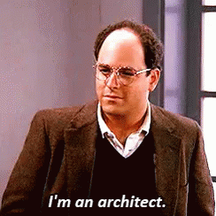

En el desarrollo de software, crear aplicaciones robustas y fáciles de mantener es una prioridad principal. Para lograr esto, los desarrolladores a menudo se basan en patrones arquitectónicos que los guían en la organización efectiva de su código
Uno de los patrones de arquitectura más populares es la arquitectura Modelo-Vista-Controlador (MVC)
¿Qué es MVC?
La arquitectura MVC separa nuestra aplicación en 3 componentes principales:
- 1. Modelo
- 2. Vista
- 3. Controlador
Explicaré cada uno de estos componentes en un momento; por ahora, veamos los beneficios de usar la arquitectura MVC
¿Por qué MVC?
La arquitectura MVC funciona como un plano para nuestra aplicación que nos ayudará a nosotros y a nuestro equipo a tener un código más organizado, limpio y flexible
Y sí... será más fácil encontrar y corregir bugs👾. Veamos cuáles son algunas de las principales ventajas de utilizar un patrón de arquitectura MVC
-
Separación de Intereses
Facilita el control y mantenimiento de nuestro código
-
Reutilización
Podemos reutilizar estos componentes en diferentes partes de nuestra aplicación o incluso en otros proyectos
-
Escalabilidad
A medida que nuestra aplicación crece, podemos agregar más VISTAS o MODELOS sin afectar la funcionalidad
MVC como el Plano de una Casa
Me gusta pensar en la arquitectura MVC como la construcción de una casa desde cero. No empezarías a martillar clavos y colocar blocks al azar. En cambio, comenzarías con un plano detallado que describe cada aspecto del diseño de la casa
Este plano sirve como guía durante el proceso de construcción, asegurando que todo esté bien organizado, eficiente y construido para durar
-
Modelo como la Obra Civil
Así como la obra civil determina la estabilidad de una casa, el MODELO define la lógica y la estructura de datos en una aplicación
-
Vista como el Diseño Estético
Es lo que hace que la casa sea visualmente atractiva, el diseño interior y la apariencia exteriorde la casa. La VISTA se encarga de presentar datos al usuario de manera estética y amigable
-
Controlador como el Constructor
Piensa en el CONTROLADOR como el constructor que sigue las instrucciones proporcionadas en el plano. Al igual que quien construye, recibe la entrada (el plano) del cliente (usuario) y coordina el proceso de construcción. Interactúa con la obra civil (MODELO) y el diseño (VISTA) de la casa
Así como el plano sirve como una guía para construir la casa, la arquitectura MVC actúa como una guía para construir aplicaciones de software

Modelo

Aquí es donde escribimos el código que se comunica con la base de datos. Al utilizar MongoDB como nuestra base de datos, podemos utilizar Mongoose para ayudarnos a crear el esquema de la lógica de nuestros datos de aplicación.Mongoose proporciona una solución basada en esquemas para modelar nuestra aplicación
La interfaz de esquema de Mongoose define la estructura de nuestro documento y el tipo de datos que estamos almacenando. Veamos cómo construir un MODELO para una simple aplicación de lista de tareas (todo):
Vista
La VISTA es lo que el usuario ve en su navegador
El CONTROLADOR pasa los datos a la VISTA, y luego la VISTA utiliza esos datos para generar un HTML dinámico que permite la interacción del usuario
Aquí utilizamos "lenguajes de plantillas" como EJS / Handlebars / Nunjucks / React, etc., para mostrar la aplicación y su interfaz de usuario. Para nuestra sencilla aplicación de lista de tareas, así es como pasamos los datos del CONTROLADOR a la VISTA:
Controlador
El CONTROLADOR es la interfaz que actualiza el MODELO y la VISTA. Podemos pensar en él como el intermediario que escucha la solicitud del cliente y sabe cómo procesar los métodos de solicitud GET / POST / PUT / DELETE
Puede comunicarse de ser necesario con la base de datos a través del MODELO, y enviar los datos a la VISTA explicando cómo presentarlos al usuario
La implementación de la arquitectura MVC depende del lenguaje de programación y el framework que estés utilizando. Sin embargo, el principio básico sigue siendo el mismo. Aquí tienes un diagrama de cómo interactúan los componentes:


¿Qué es el router?
En la figura 1 vimos que antes del CONTROLADOR tenemos un ROUTER. El ROUTER es el primer punto de contacto que escucha las solicitudes que provienen del lado del cliente
Esto agrega un nivel extra de abstracción donde podemos manejar las solicitudes de los usuarios y saber a qué controlador enviar esas solicitudes. ¡Sí! podemos tener múltiples controladores, por lo que el ROUTER nos ayuda a tener la separación de intereses de la que hablamos al principio
Resumen

- El navegador (Chrome / Firefox / Safari, etc.) envia una solicitud al ROUTER el cual envía la solicitud al CONTROLADOR
- El CONTROLADOR interactúa con el MODELO para enviar y recibir datos
Procesa las solicitudes GET / POST / PUT / DELETE del usuario
-
El MODELO interactúa con la base de datos. Es cómo agregamos y tomamos elementos de la base de datos
Podemos utilizar cualquier base de datos: MongoDB / MySQL / Oracle / PostgreSQL, etc.
- El CONTROLADOR envía los datos obtenidos del MODELO a la VISTA para explicar la presentación al espectador
-
La VISTA renderiza los datos según lo que el CONTROLADOR envía (la vista es lo único que el usuario ve).
Genera un HTML dinámico utilizando el lenguaje de plantilla que elijamos: EJS / Handlebars / Pug / Nunjucks / React, etc.
- La VISTA enviará su presentación final al CONTROLADOR
- El CONTROLADOR envía esos datos finales al usuario
Conclusión
Al comprender e implementar la arquitectura MVC en nuestros proyectos, podemos construir aplicaciones más robustas y fáciles de mantener que resisten la prueba del tiempo. Sus claras divisiones de intereses, reutilización, capacidad de prueba y ventajas de escalabilidad continúan haciéndolo una elección popular entre los desarrolladores